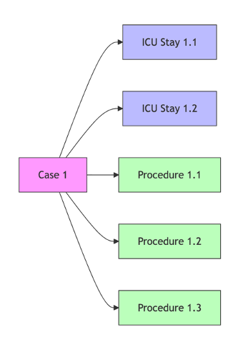

CORR-Variables
Streamlining clinical research with real-world data
🚀 What is CORR-Vars?
CORR-Variables is a Python package for building clinical study cohorts from ICU and hospital data sources, developed by the Charité Outcomes Research Repository (CORR) team.
It functions as a high-level connector on top of a data source, preprocessing raw clinical data into clinically meaningful, quality-checked variables whose definitions are served and versioned by the CORR Concepts API, to streamline research with real-world data.
Pre-defined clinical variables validated by medical experts
Built on Polars for fast processing of large datasets
Simple API that works with existing analysis workflows
Quick Start#
uv add git+https://github.com/CUB-CORR/corr-vars.git
Requires Python ≥ 3.10.
Variable definitions are served by the CORR Concepts API. A cohort needs a project and a key:
export CORR_CONCEPTS_API_KEY="corr_..."
The project is passed per cohort: Cohort(project="my_project").
Your First CORR Cohort#
Get started in under 5 minutes:
# Import the main class
from corr_vars import Cohort
# Create your first cohort
cohort = Cohort(
obs_level="icu_stay",
sources={"reprodicu": {"path": "/path/to/reprodICU_files"}},
project="my_project",
)
# Add clinical variables
cohort.add_variable("age_on_admission")
cohort.add_variable("blood_sodium")
# View your data
print(f"Cohort: {len(cohort.obs)} patients")
print(cohort.obs.head())
🎯 Next Steps
New to CORR-Vars? → Start with our Tutorials and Getting Started
Need a specific variable? → Browse the Concept Browser
Want to contribute? → Read our Contributing New Variables guide
Documentation Structure#
Getting Started Tutorial - Your first analysis in 30 minutes
Custom Variables Guide - Create your own clinical variables
Contributing Guide - Add variables to the community catalog
Troubleshooting - Solutions for common issues
Cohort Class - Main interface for building cohorts
Variable Types - Native, derived, and aggregation variables
Data Sources - ReprodICU, the local source skeleton, and the source plugin system
Legacy Interface - Pandas compatibility layer
📖 Complete Table of Contents
Learning Resources
- Tutorials and Getting Started
- Getting Started - Your First Analysis
- Step 1: Environment Setup
- Step 2: Basic Cohort Creation
- Step 3: Exploring Your Cohort
- Step 4: Adding Your First Variables
- Step 5: Examining the Data
- Step 6: Creating Aggregated Variables
- Step 7: Setting Eligibility and Inclusion Criteria
- Step 8: Applying Inclusion Criteria
- Step 9: Generate Summary Statistics
- Step 10: Save Your Work
- Tutorial 2: Advanced Variable Creation
- Tutorial 3: Multi-Source Analysis
- Tutorial 4: Working with Time-Series Data
- Tutorial 5: Complete Research Workflow Template
- Next Steps in Your CORR-Vars Journey
- Custom Variables Guide
- Contributing New Variables
- Overview
- Development Workflow Overview
- Step 1: Create a GitHub Issue
- Step 2: Set Up Development Environment and Create Feature Branch
- Step 3: Explore and Prototype in Jupyter Notebook
- Step 4: Implement Clean Code in Configuration Files
- Step 5: Verify Everything Works
- Step 6: Create Pull Request
- Step 7: Continuous Integration
- Step 8: Request Review and Merge
- Post-Merge Follow-up
- Common Pitfalls and Tips
- Additional Resources
- Troubleshooting Guide
API Reference
Core Architecture#
Choose your analysis unit:
Patient - One row per unique patient (
patient_id)Hospital Stay - Complete hospitalization periods (
case_id)ICU Stay - Individual intensive care episodes (
icu_stay_id)Procedure - Specific surgical/medical procedures (
procedure_id)
{kind=link}

Rich clinical data hierarchy:
Native - Direct database extractions
Derived - Computed from existing variables
Static - Single values per observation
Dynamic - Time-series measurements

🔍 Explore Available Variables
Browse our 300+ pre-defined clinical variables in the interactive Concept Browser
Real-World Example#
Here’s how researchers use CORR-Vars for clinical studies:
# Build an ICU sepsis cohort
cohort = Cohort(
obs_level="icu_stay",
sources={"reprodicu": {"path": "/path/to/reprodICU_files"}},
project="my_project",
)
# Add a static variable
cohort.add_variable("sofa_score_imputed")
# Add time-series biomarkers
cohort.add_variable("blood_lactate")
cohort.add_variable("blood_creatinine")
# Apply inclusion criteria
cohort.include_list([
{"variable": "age_on_admission", "operation": ">= 18", "label": "Adults"},
{"variable": "sofa_score_imputed", "operation": ">= 2", "label": "Organ dysfunction"}
])
# Generate publication-ready summary
table1 = cohort.tableone(groupby="inhospital_death")
print(f"Study cohort: {len(cohort.obs)} patients")
📈 Publication Ready
CORR-Vars concepts are quality-checked by attending physicians at Charité Berlin before being used for:
Critical care outcomes research
Machine learning model development
Health services research
Quality improvement studies
Community & Support#
Report issues or request features on GitHub
Check our Troubleshooting Guide guide or contact the team
Add new variables to help the research community
—
🏥 Developed at Charité Berlin
Advancing clinical research through innovative data science tools
Development Team:
…and the entire CORR team 🙏
📊 Project Stats
🏥 Version: 2.0.0
📅 Active Development: Since September 2024
📈 Publications: 10+ active projects pending publication
👥 Users: Research teams across Charité departments with a focus on critical care outcomes research
🔗 GitHub: CORR-Vars Repository